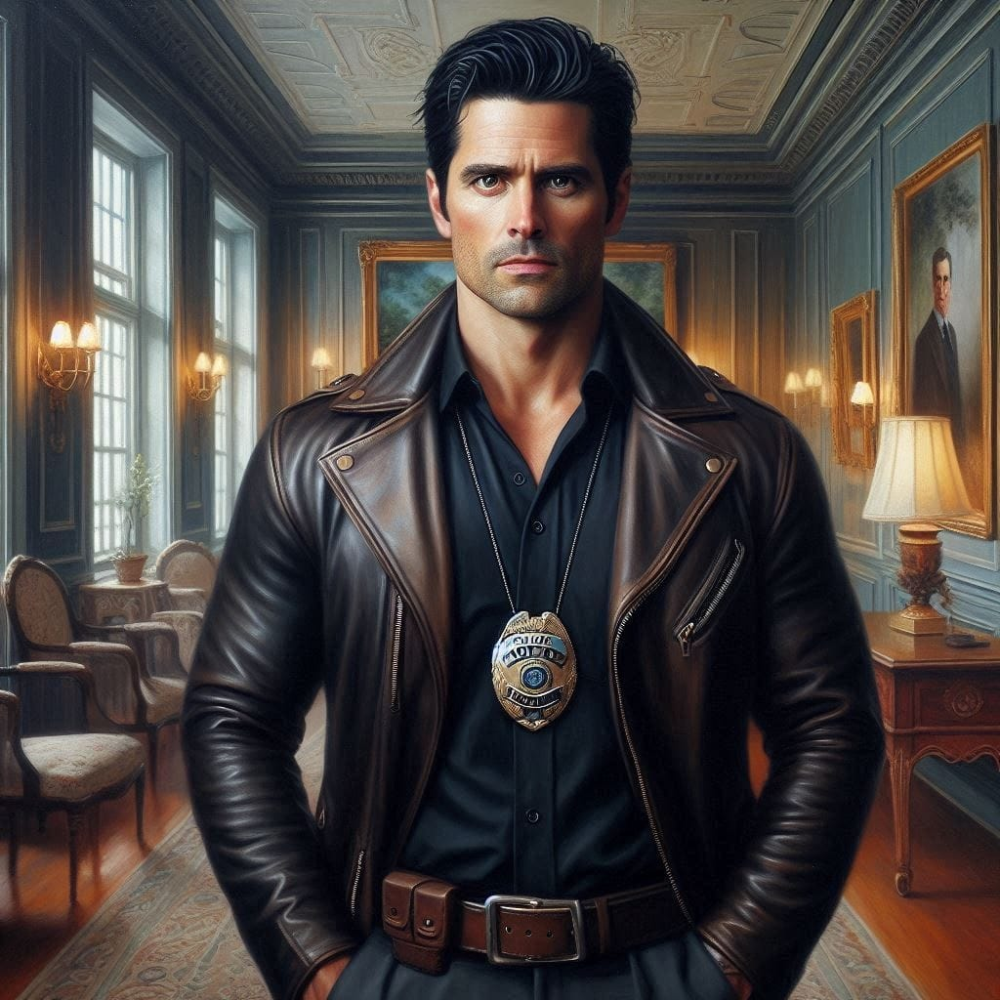
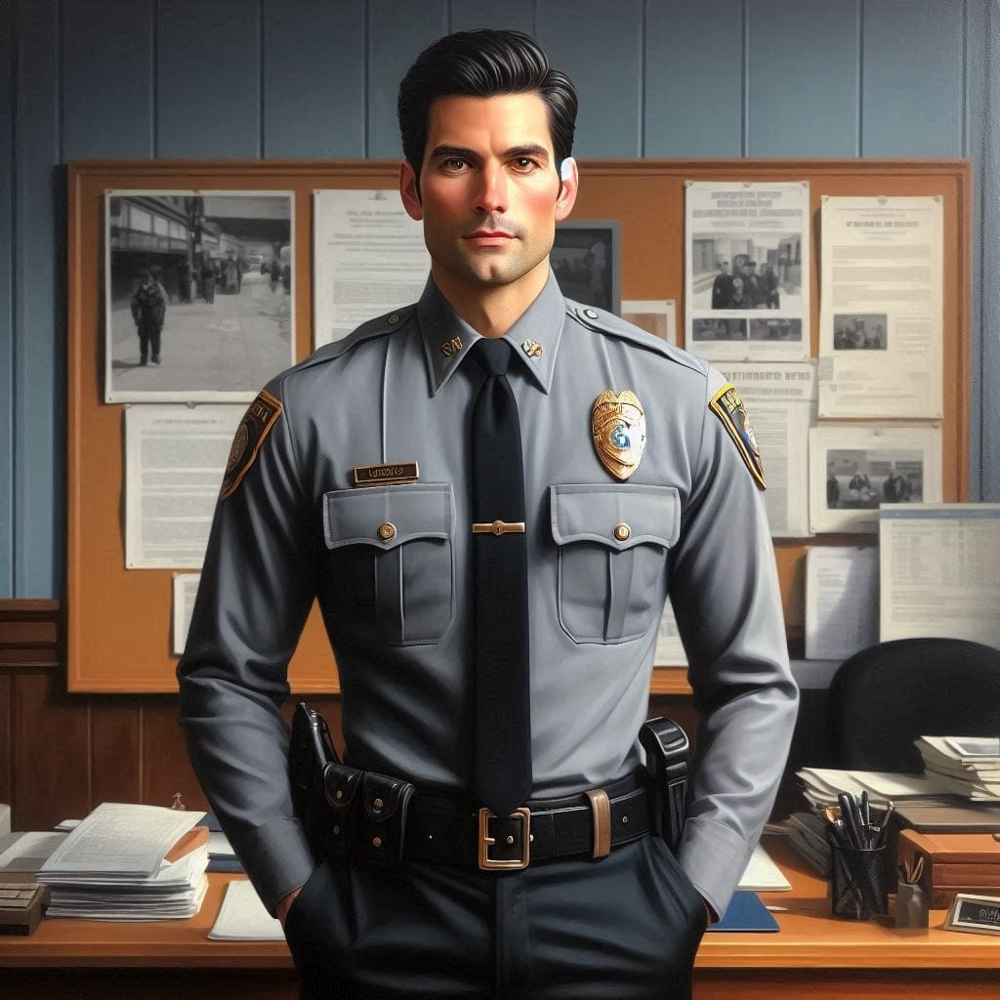

Personajes
Personajes Principales

Kendall Westbrook Ferreti
20 añosFuerte y de caracter decidido. No se deja intimidar por nadie.

Myles Russell Leblanc
22 añosInteligente, observador y asututo. suele ser la voz razonable cuando todo se descontrola.

Kendrick Westbrook
24 añosSu humor es sarcastico, y a veces usa la burla como escudo para no mostrar su vulnerabilidad.

Alec Russell Leblanc
20 añosUn poco terco y suele actuar antes de pensar, pero su corazon es leal y protector con quienes ama.

Keyler Westbrook Ferreti
18 añosAunque no lo exprese se preocupa por los suyos. Sus gestosson minimos pero significativos.

Kelly Westbrook Bennett
17 añosSu encanto hace que sea facil encariñarse con ella.

Kenneth Westbrook Bennett
17 añosSu energia puede ser agotadora, pero tambien es lo que lo convierte en alguien imposible de ignorar.

Charles Lindholm
26 añosUne piezas, busca patrones y hace preguntas que otros no se atreven a hacer.
Personajes Secundarios

Deborah Bates
21 añosDisfruta ser admirada y le molesta cuando alguien no cae en su encanto.

Dante Bates
23 añosReservado, solo habla cuando es necesario. No le gusta ser el centro de atencion.

Eloisa Vega
17 añosEs calida, alegre y llena de pequeñas ocurrencias que la hacen adorable.

Carter Vega
21 añosDivertido y despreocupado, la mayoria de las veces esta distraído.

Jennell Hoffman Meyer
22 añosEs la defincion de dulzura. Caracter suave, paciente y lleno de calidez

Kathrine Lindholm
22 añosInteligente, filosa en sus palabras y calculadora. Tiene una seduccion peligrosa.
Otros Personajes

Christine Hoffman
21 añosKeyden Westbrook
Nick Dalton
Drew Becker
Jayden Ivanov
Elsa Benson

Rob bronson
Cassandra Ferreti de Westbrook
Khalid Westbrook
Alondra Bennett de Westbrook

Frederick Russell
Juliette Leblanc de Russell
